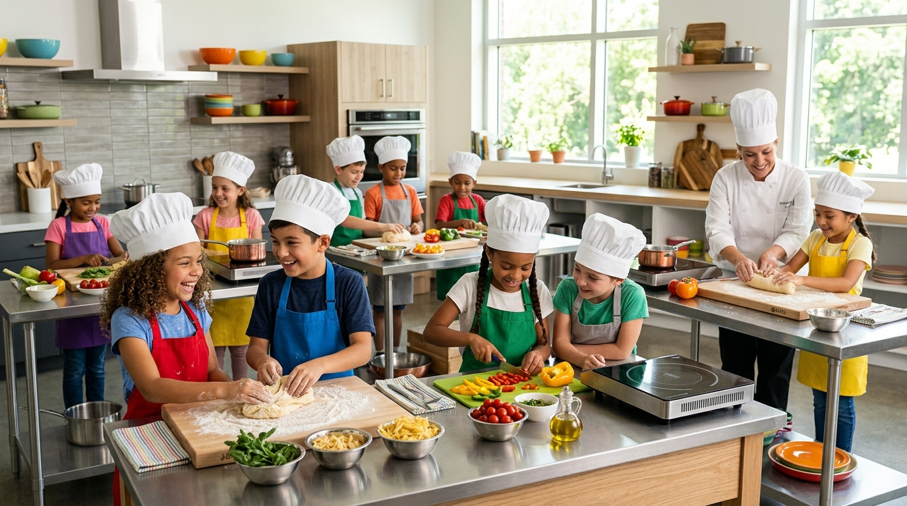

Cooking is More Than Food — It's Independence & Chemistry
Founded by professional pastry chef and mother of two Maya Vance, Little Chefs Academy was created to give children real culinary autonomy and scratch-cooking confidence.

Little Chefs Academy was founded by professional pastry chef and mother of two, Maya Vance. Frustrated by commercial cooking programs that relegated children to spectators or used pre-packaged mixes, Maya created a state-of-the-art culinary sanctuary where kids cook completely from scratch.
Here, measuring cups teach fractions, sauté pans demonstrate heat transfer, and vegetable chopping transforms picky eaters into adventurous culinary explorers. We believe every child deserves the pride of serving their family a meal they cooked themselves.
Our 4 Core Learning Pillars
We teach more than following recipes. Our curriculum builds life skills, scientific wonder, and creative confidence.
Kitchen Chemistry & STEM
From yeast fermentation and Maillard browning to acid-base balancing and ratio arithmetic, children discover how science makes food delicious.
Conquering Picky Eating
When children chop, season, and plate vegetables themselves, psychological food resistance vanishes. We turn hesitation into curious ownership.
Global Gastronomy
Food is the friendliest doorway to world cultures. Students explore heirloom recipes, historical cooking methods, and spices from over 24 countries.
Farm-to-Kitchen Eco Care
Young chefs learn respect for agricultural ingredients, seasonality, indoor hydroponic herb clipping, and responsible zero-waste kitchen habits.
Designed From the Floor Up Exclusively for Young Chefs
Adult kitchens can be intimidating and dangerous for children. Our 4,500 sq. ft. Austin academy was custom-engineered with child safety, ergonomics, and visibility at every single workstation.
Adjustable Counters
Pneumatic workstations adjust from 28" to 36" so kids cook with ergonomic posture without stepping on stools.
Overhead 4K Displays
Angled demonstration mirrors and overhead 4K screens allow every child a crystal-clear view of chef hand techniques.
Triple Hygiene Sinks
Automatic touchless sensor faucets and kid-height warm wash stations reinforce surgical-grade hygiene habits.
Parent Viewing Lounge
Acoustic glass viewing lounge with complimentary artisan coffee, high-speed Wi-Fi, and live photo tablet stations.

Our Gold-Standard Kitchen Safety Pillars
Safety isn't just a rule in our kitchen — it's the foundation of every recipe we teach.
Ergonomic Kid Cutlery
Children use custom nylon safety serrated knives and finger guards designed to slice carrots and cucumbers easily without breaking skin.
Induction Cool-Touch Tops
All cooking stations utilize induction burners that heat the cookware magnetic base directly without an open flame or scorching hot glass.
Rigorous Allergen Isolation
Our entire teaching facility is completely tree nut and peanut-free. Separate color-coded cookware is dedicated for gluten-free and dairy-free students.
Certified First Aid Staff
Every chef instructor holds active Red Cross Pediatric First Aid, CPR, and ServSafe Food Protection Manager certifications.
Our Culinary Journey & Milestones
How a mother's passion project blossomed into Central Texas' leading hands-on kids culinary academy.
From Maya's Table to Austin's Flagship Studio
What began with 8 neighborhood children baking fresh scones around a flour-dusted table has grown into an accredited, allergen-safe culinary sanctuary empowering thousands of confident young chefs.
"Every great chef was once a child who made a glorious, creative mess in the kitchen."
— Chef Maya Vance, FounderThe Kitchen Table Pilot
Chef Maya Vance welcomed 8 neighborhood kids into her home kitchen for Saturday morning scone and brioche baking. Word spread rapidly among parents craving tactile, screen-free hobbies that taught real life skills.
Tree Nut & Peanut-Free Certification
In response to rising childhood food allergies, we transitioned our entire culinary operation into a strictly certified nut-free sanctuary with dedicated color-coded cookware for gluten-free and dairy-free learners.
Opening the Custom Austin Facility
We designed and opened our dream academy in Austin featuring 16 kid-ergonomic induction stations, an acoustic parent viewing lounge, child-safe French cookware, and a live culinary demonstration stage.
STEM Kitchen Accreditation & Field Trips
Partnered with 14 Austin elementary and middle schools to deliver accredited science-in-the-kitchen field trips, turning yeast biology, dough gluten elasticity, and emulsion chemistry into interactive curriculum credits.
1,850+ Graduates & Community Table Initiative
Celebrating over 1,850 junior chefs graduated! Launched our "Cooking For Good" lunchbox charity giving program where students prepare nutritious, balanced meals donated directly to Central Texas food pantries.
Meet Our Culinary Instructors
Passionate culinary educators who make learning technique empowering and delightful.


Accreditations & Community Trust
We hold ourselves to the strictest industry hygiene, allergen care, and educational standards.
ServSafe Certified
100% instructor food handling & safe temp manager compliance
FARE Allergy Partner
Recognized by Food Allergy Research & Education standards
Red Cross Pediatric CPR
Active pediatric first aid & emergency care on every shift
Zero-Waste Austin
92% organic food scraps composted; 100% plastic-free packaging
Frequently Asked Questions
Common questions parents ask about class structure, food allergies, and studio visits.